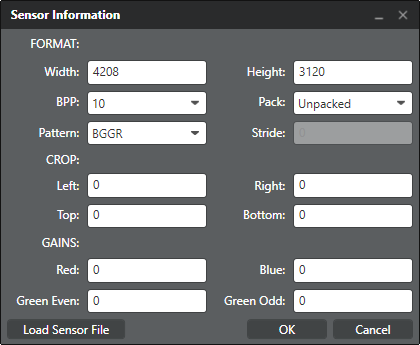

The following are required to create a
tuning project:
- Project folder – The root folder where project files are stored from Chromatix.
- XSD folder – A local copy of the default XSD files. The default files are located here: $BUILD_ROOT\LINUX\android\vendor\qcom\proprietary\chi-cdk\cdk\chromatix\XSD
- XML folder – A local copy of the default XML files. The default files are located here: $BUILD_ROOT\LINUX\android\vendor\qcom\proprietary\chi-cdk\cdk\chromatix\XML
- Presets folder – A local copy of presets. The default files are located here: $BUILD_ROOT\LINUX\android\vendor\qcom\proprietary\chi-cdk\cdk\chromatix\presets
- Driver info – The sensor driver information file is provided by the sensor manufacturer in a text or xml file. If this file is not available, specify the sensor information when you create the project.
Note: It is recommended that you use a similar directory structure as the build when creating your local XSD and XML folders (e.g., <someplace>\cdk\chromatix\XSD and <someplace>\chi-cdk\chromatix\XML).
A Chromatix tuning project captures the
parameter values set during the tuning process and the camera sensor module information.
A tuning project is specific to one ISP version. A single project is used to save the
parameters for all use cases (i.e., preview, video, snapshot, etc.) for a single sensor.
If your device has multiple sensors (e.g., front camera, rear camera, etc.), then you
need a separate project for each sensor and each project must use the same XSD
set.
-
Click
 next to Project Location and navigate
to the root folder created for the project. The file path and folder name should
not contain spaces. Make the file path as short as possible to avoid the Windows
max path size limitation.
next to Project Location and navigate
to the root folder created for the project. The file path and folder name should
not contain spaces. Make the file path as short as possible to avoid the Windows
max path size limitation.
-
Click next to the XSD Folder field and
navigate to the local folder containing the XSD files (ISP, 3A, and common)
copied from the default location.
-
Click next to the XML Folder field and
navigate to the local folder containing the default XML files copied from the
default location.
-
Click next to the Presets Folder field and
navigate to the local folder containing the Preset files copied from the default
location.
-
Do one of the following:
- If you have an XML file with the sensor information (e.g., max line
count, bayer pattern, bits per pixel, etc.), then click next to the
Driver Info field, navigate
to the applicable sensor driver XML file, and click Open.
- If you have a text file with the sensor information, then click next to the
Driver Info field, navigate
to the applicable sensor driver text file, and click Open.
- If you do not have a text file with the sensor information, click Custom to display the Sensor Information window. Enter the appropriate sensor values then click OK.
- If you have an XML file with the sensor information (e.g., max line
count, bayer pattern, bits per pixel, etc.), then click